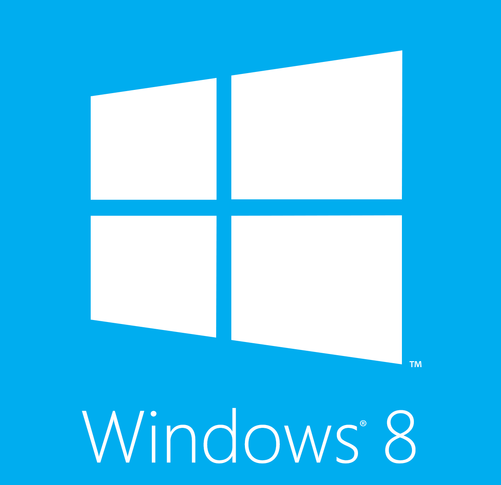
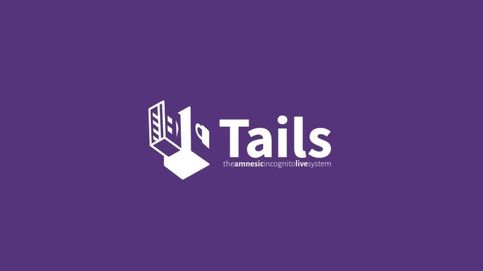

Versões do Windows
Windows 1.0
O Windows 1.0, lançado em 1985, foi a primeira versão do sistema operacional da Microsoft com uma interface gráfica para o MS-DOS. Ele introduziu janelas emolduradas, menus suspensos e ícones, permitindo aos usuários realizar multitarefas de maneira mais intuitiva. Embora simples em comparação com versões posteriores, o Windows 1.0 foi um marco importante na evolução das interfaces gráficas de usuário.
Windows 2.0
O Windows 2.0, lançado em 1987, trouxe várias melhorias em relação à versão anterior. Ele introduziu o suporte para janelas sobrepostas, permitindo que os usuários abrissem várias janelas ao mesmo tempo e as organizassem na tela. Além disso, o Windows 2.0 adicionou atalhos de teclado, tornando a navegação e o uso do sistema mais eficientes. Essa versão também começou a ganhar popularidade devido ao suporte para aplicativos como Excel e Word.
Windows 3.0
O Windows 3.0, lançado em 1990, foi uma versão importante na evolução do sistema operacional da Microsoft. Ele trouxe melhorias gráficas significativas e suporte para memória expandida, o que permitiu aos usuários rodar mais aplicativos simultaneamente. Além disso, o Windows 3.0 introduziu o Gerenciador de Programas e o Gerenciador de Arquivos, tornando a navegação no sistema mais intuitiva. Esta versão foi um sucesso comercial e ajudou a consolidar o Windows como uma plataforma dominante no mercado de computadores pessoais.
Windows 3.1
O Windows 3.1, lançado em 1992, foi uma atualização importante para o Windows 3.0. Ele trouxe suporte para fontes TrueType, que permitiram uma melhor qualidade de texto em documentos e na tela. Também introduziu o Gerenciador de Tarefas e o suporte para redes, facilitando a conexão entre computadores. Além disso, o Windows 3.1 era mais estável e tinha um desempenho melhorado em relação às versões anteriores. Esta versão consolidou ainda mais a popularidade do Windows nos ambientes de trabalho e domésticos.
Windows 95
O Windows 95, lançado em 1995, foi um marco significativo na evolução do sistema operacional da Microsoft. Ele introduziu o Menu Iniciar e a barra de tarefas, revolucionando a interface do usuário e tornando-a mais intuitiva. Além disso, o Windows 95 trouxe suporte para o sistema de arquivos FAT32, melhorando a eficiência do armazenamento de dados, e introduziu a capacidade de multitarefa preemptiva, permitindo que os aplicativos rodassem de forma mais suave e eficiente. Essa versão foi um grande sucesso comercial e consolidou o Windows como a plataforma dominante para computadores pessoais.
Windows 98
O Windows 98, lançado em 1998, trouxe várias melhorias em relação ao seu antecessor, Windows 95. Ele introduziu melhor suporte para dispositivos USB, tornando a conectividade com periféricos mais fácil. Também melhorou a integração com a internet, com o Internet Explorer 4.0 incluído como parte do sistema. Além disso, o Windows 98 introduziu o sistema de arquivos FAT32, que permitiu um gerenciamento mais eficiente de discos rígidos maiores. A versão Second Edition (SE), lançada em 1999, trouxe ainda mais melhorias de desempenho e correções de bugs.
Windows ME
O Windows ME (Millennium Edition), lançado em 2000, foi projetado com um foco maior em recursos multimídia. Ele introduziu novos aplicativos como o Windows Movie Maker e melhorias no Windows Media Player. No entanto, o Windows ME foi criticado por sua instabilidade e problemas de desempenho, o que afetou sua popularidade. Apesar disso, ele trouxe avanços importantes em termos de experiência do usuário, como o recurso de Restauração do Sistema, que permitia aos usuários reverter o sistema a um estado anterior em caso de problemas.
Windows 2000
O Windows 2000, lançado no ano 2000, foi direcionado principalmente para o mercado corporativo. Ele trouxe melhorias significativas em termos de estabilidade e segurança, sendo baseado no kernel do Windows NT. Introduziu recursos como Active Directory, que facilita o gerenciamento de redes, e o suporte para plug and play, que permitia a adição de novos dispositivos com maior facilidade. O Windows 2000 também teve várias edições, incluindo Professional, Server, Advanced Server e Datacenter Server, cada uma voltada para diferentes necessidades empresariais.
Windows XP

O Windows XP, lançado em 2001, é uma das versões mais populares e bem-sucedidas do sistema operacional da Microsoft. Ele trouxe uma interface gráfica significativamente aprimorada, com temas visuais coloridos e um novo design de Menu Iniciar. Além disso, o Windows XP ofereceu maior estabilidade e desempenho, baseado no kernel do Windows NT. O sistema incluiu diversas edições, como o Windows XP Home Edition para usuários domésticos e o Windows XP Professional para ambientes corporativos, com recursos adicionais de rede e segurança. O Windows XP também teve suporte estendido por muitos anos devido à sua popularidade e ampla adoção, tornando-se uma das versões mais duradouras do Windows.
Windows Vista
O Windows Vista, lançado em 2007, introduziu várias inovações visuais e de segurança. A interface Aero trouxe transparências e efeitos visuais avançados, melhorando a experiência do usuário. No entanto, o Vista enfrentou críticas devido ao seu alto consumo de recursos, o que afetava o desempenho em máquinas menos potentes. Ele também trouxe o Controle de Conta de Usuário (UAC), que aumentou a segurança, mas foi considerado incômodo por muitos usuários. Apesar dos desafios, o Windows Vista estabeleceu as bases para melhorias futuras que seriam vistas no Windows 7.
Windows 7
O Windows 7, lançado em 2009, é conhecido por suas melhorias de interface e desempenho em relação ao Windows Vista. Ele trouxe uma interface mais limpa e intuitiva, com a introdução da barra de tarefas redesenhada e a funcionalidade de "Aero Snap" para organizar janelas na área de trabalho. O Windows 7 também melhorou a compatibilidade com hardware e software, tornando-o mais estável e rápido. Essa versão foi amplamente elogiada por usuários e críticos, e continua a ser popular mesmo após o lançamento de versões mais recentes do Windows.
Windows 8
O Windows 8, lançado em 2012, foi uma versão focada em dispositivos de toque. Ele introduziu a Tela Inicial, que substituiu o Menu Iniciar tradicional, com blocos dinâmicos que mostravam informações em tempo real. Essa mudança na interface, projetada para funcionar bem em tablets e PCs, foi bastante controversa e recebeu críticas por não ser intuitiva para usuários de desktop. O Windows 8 também trouxe melhorias de desempenho e suporte para novas tecnologias, como USB 3.0 e NFC. No entanto, devido à reação mista dos usuários, a Microsoft lançou o Windows 8.1 em 2013, que reintroduziu o botão Iniciar e fez outras melhorias na interface.
Windows 8.1
O Windows 8.1, lançado em 2013, foi uma atualização para o Windows 8 que trouxe melhorias significativas na interface do usuário. Ele reintroduziu o botão Iniciar, que havia sido removido no Windows 8, facilitando a navegação para os usuários de desktop. Além disso, o Windows 8.1 ofereceu melhor integração com serviços de nuvem e melhorias no desempenho geral. A atualização também trouxe novos recursos de personalização, como opções de tamanho dos blocos dinâmicos na Tela Inicial, proporcionando uma experiência mais personalizada e amigável.
Windows 10

O Windows 10, lançado em 2015, foi projetado para combinar as melhores características do Windows 7 e 8. Ele trouxe de volta o Menu Iniciar em uma forma expandida e introduziu a assistente virtual Cortana. O Windows 10 também introduziu o navegador Microsoft Edge, substituindo o Internet Explorer, e trouxe atualizações contínuas, chamadas "Windows as a Service", que permitiram melhorias e novos recursos serem adicionados regularmente. Essa versão foi amplamente adotada tanto por usuários domésticos quanto corporativos, graças à sua estabilidade, segurança e interface familiar.
Windows 11

O Windows 11, lançado em 2021, trouxe uma nova interface visual com um design mais moderno e centrado, otimizando a produtividade e a experiência do usuário. Ele introduziu novos recursos, como a capacidade de rodar aplicativos Android nativamente, Snap Layouts para melhor organização de janelas, e melhorias na performance e segurança. O Windows 11 também focou na integração com a nuvem e em facilitar o trabalho híbrido, adaptando-se às novas formas de trabalho e colaboração.
Distribuição do Linux
Ubuntu
Ubuntu: Uma das distribuições Linux mais populares e amigáveis, baseada no Debian. Oferece uma interface gráfica chamada GNOME e é conhecida por sua facilidade de uso. Tem um forte suporte da comunidade e é ideal para iniciantes.
Debian

Debian: Uma das distribuições mais antigas e estáveis, famosa por seu rigoroso processo de desenvolvimento e estabilidade. É a base de muitas outras distribuições, incluindo o Ubuntu. Oferece suporte para uma ampla variedade de arquiteturas de hardware.
Fedora
Fedora: Patrocinada pela Red Hat, é conhecida por estar na vanguarda das tecnologias Linux, sendo muitas vezes usada por desenvolvedores. Utiliza o ambiente de desktop GNOME e serve como uma plataforma de teste para funcionalidades que eventualmente chegam ao RHEL.
Linux Mint

Linux Mint: Baseada no Ubuntu, oferece uma interface de usuário amigável e estável, com ambientes de desktop como Cinnamon, MATE e Xfce. É ideal para quem está migrando do Windows.
Arch Linux

Arch Linux: Voltada para usuários avançados, conhecida por sua filosofia de simplicidade e personalização. Utiliza o gerenciador de pacotes pacman e é uma distribuição rolling release, sempre atualizada.
Manjaro
Manjaro: Baseada no Arch Linux, mas voltada para iniciantes. Oferece uma instalação mais fácil e uma experiência de usuário amigável, com várias opções de ambiente de desktop, como Xfce, GNOME e KDE.
CentOS

CentOS: Uma distribuição de classe empresarial baseada no RHEL. Conhecida por sua estabilidade e suporte a longo prazo, é amplamente utilizada em servidores e ambientes de produção.
openSUSE
openSUSE: Oferece duas versões principais: Leap, que é estável e baseada no código-fonte do SUSE Linux Enterprise, e Tumbleweed, que é rolling release. É conhecida por suas ferramentas de administração, como o YaST.
RHEL
RHEL (Red Hat Enterprise Linux): Distribuição comercial voltada para empresas, conhecida por seu suporte robusto e estabilidade. É amplamente utilizada em ambientes corporativos e governamentais.
Elementary OS

Elementary OS: Famosa por sua interface elegante e inspirada no macOS, oferece uma experiência de usuário bonita e simples, utilizando o ambiente de desktop Pantheon.
Zorin OS
Zorin OS: Baseada no Ubuntu, oferece uma interface familiar para ex-usuários do Windows, focando na facilidade de uso e transição suave.
Puppy Linux

Puppy Linux: Uma distribuição extremamente leve, projetada para ser executada em hardware antigo ou com recursos limitados. Pode ser executada diretamente de um pendrive ou CD.
Kali Linux

Kali Linux: Focada em segurança e testes de penetração, é amplamente utilizada por profissionais de segurança cibernética. Inclui uma ampla gama de ferramentas de segurança pré-instaladas.
Tails
Tails: Focada em privacidade e anonimato, projetada para ser executada a partir de um pendrive. Utiliza a rede Tor para garantir o anonimato online e não deixa rastros no computador usado.
Void Linux
Void Linux: Conhecida por seu sistema de init próprio (runit) e seu gerenciador de pacotes exclusivo (xbps). Oferece alta personalização e desempenho.
Solus
Solus: Focada em simplicidade e usabilidade, oferece uma experiência de desktop moderna com seu ambiente de desktop Budgie. É uma distribuição rolling release.
Pop!OS
Pop!_OS: Desenvolvida pela System76 e baseada no Ubuntu. É otimizada para uso em hardware da System76 e focada em produtividade e desempenho.
MX Linux
MX Linux: Uma distribuição leve e estável, baseada no Debian. Conhecida por sua facilidade de uso e eficiência, é adequada para computadores mais antigos ou com menos recursos.
Rocky Linux
Rocky Linux: Uma alternativa comunitária ao CentOS, fundada por um dos criadores do CentOS. Voltada para estabilidade e suporte empresarial, é ideal para servidores e ambientes de produção.
Slackware

Slackware: Uma das distribuições mais antigas ainda em desenvolvimento. Conhecida por sua simplicidade e adesão aos princípios Unix, é ideal para usuários avançados que desejam um sistema operacional direto e configurável.